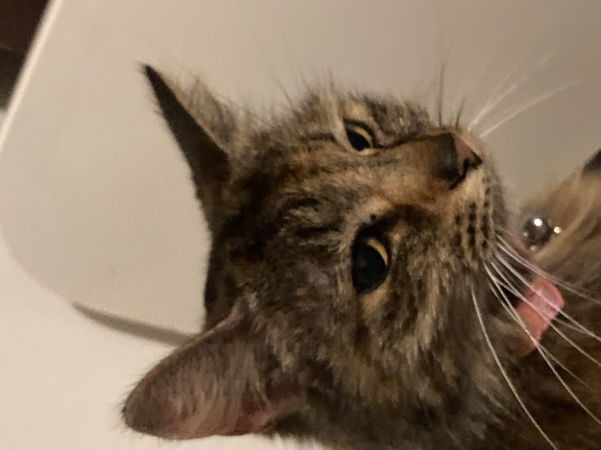

Home
Explore
Notifications
Bookmarks
Lists
Lists
More
Kitty
@KittyOfficial 
Home
What's happening?
Kitty @KittyOfficial 25m
I'm so tired of not being able to run around freely without dogs chasing me! What ever happened to living in a free world!

Litterman @Mrcoolcat 52m
Where can I get good catnip? Heading out to town this weekend 😎

Saphire @SassySaphire 1h
I don't get why these peasants keep buying me cheap food 🙄.
What's happening
Who to follow